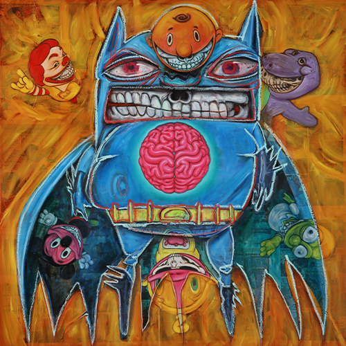
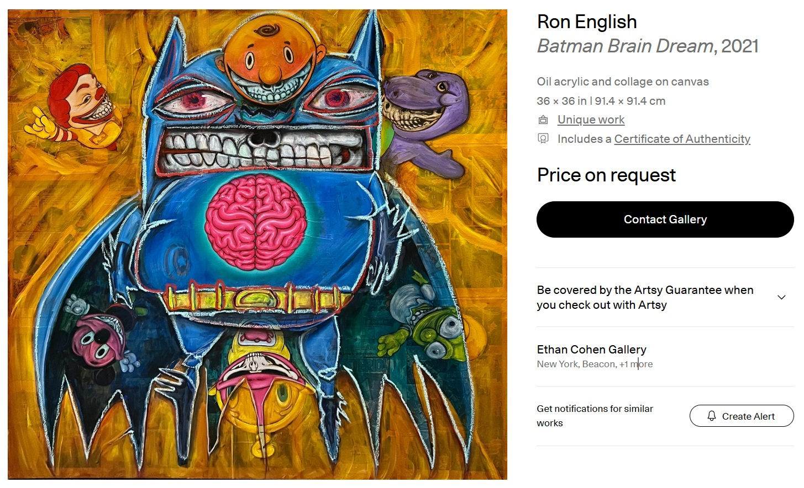
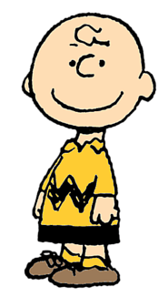
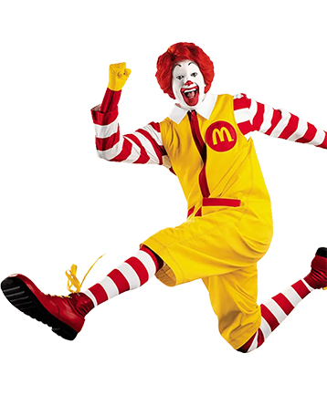

Notes
Also known as Batman Brain Dream.
Collaborative work by Ron English and Travie McCoy.
This work appears on Artsy’s artwork page as Batman Brain Dream, where it is listed as a 2021 oil, acrylic, and collage on canvas measuring 36 × 36 inches (91.4 × 91.4 cm), unique, hand-signed by the artist, with certificate of authenticity included.
Artsy lists the work as hand-signed by the artist; no signature is visible on the front in the available documentation.
The composition references DC Comics’ Batman and incorporates imagery associated with Teletubbies, Homer Simpson, Mickey Mouse, Charlie Brown, Barney, and Ronald McDonald.
Ancillary Documentation





